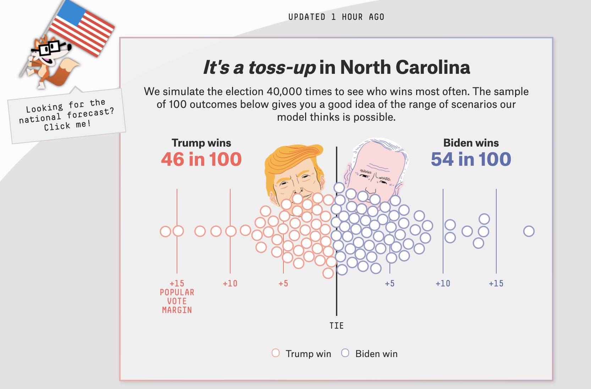
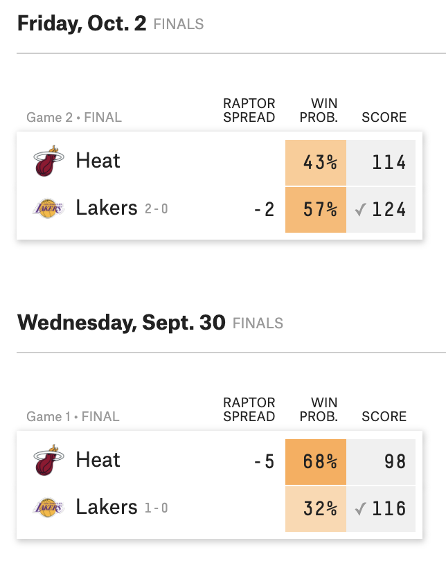

Logistic regression
STA 210 - Spring 2022
Welcome
Announcements
Schedule changes for the remainder of the semester
Thursday office hours in my office: 213 Old Chem
Any questions on project proposals?
Topics
Logistic regression for binary response variable
Relationship between odds and probabilities
Use logistic regression model to calculate predicted odds and probabilities
Computational setup
Predicting categorical outcomes
Types of outcome variables
Quantitative outcome variable:
- Sales price of a house in Levittown, NY
- Model: Expected sales price given the number of bedrooms, lot size, etc.
Categorical outcone variable:
- High risk of coronary heart disease
- Model: Probability an adult is high risk of heart disease given their age, total cholesterol, etc.
Models for categorical outcomes
Logistic regression
2 Outcomes
1: Yes, 0: No
Multinomial logistic regression
3+ Outcomes
1: Democrat, 2: Republican, 3: Independent
2020 election forecasts

NBA finals predictions

Do teenagers get 7+ hours of sleep?
Students in grades 9 - 12 surveyed about health risk behaviors including whether they usually get 7 or more hours of sleep.
Sleep7
1: yes
0: no
# A tibble: 446 × 6
Age Sleep7 Sleep SmokeLife SmokeDaily MarijuaEver
<int> <int> <fct> <fct> <fct> <int>
1 16 1 8 hours Yes Yes 1
2 17 0 5 hours Yes Yes 1
3 18 0 5 hours Yes Yes 1
4 17 1 7 hours Yes No 1
5 15 0 4 or less hours No No 0
6 17 0 6 hours No No 0
7 17 1 7 hours No No 0
8 16 1 8 hours Yes No 0
9 16 1 8 hours No No 0
10 18 0 4 or less hours Yes Yes 1
# … with 436 more rowsPlot the data

Let’s fit a linear regression model
Outcome: \(Y\) = 1: yes, 0: no

Let’s use proportions
Outcome: Probability of getting 7+ hours of sleep

What happens if we zoom out?
Outcome: Probability of getting 7+ hours of sleep

🛑 This model produces predictions outside of 0 and 1.
Let’s try another model

✅ This model (called a logistic regression model) only produces predictions between 0 and 1.
The code
Different types of models
| Method | Outcome | Model |
|---|---|---|
| Linear regression | Quantitative | \(Y = \beta_0 + \beta_1~ X\) |
| Linear regression (transform Y) | Quantitative | \(\log(Y) = \beta_0 + \beta_1~ X\) |
| Logistic regression | Binary | \(\log\big(\frac{\pi}{1-\pi}\big) = \beta_0 + \beta_1 ~ X\) |
Odds and probabilities
Binary response variable
- \(Y = 1: \text{ yes}, 0: \text{ no}\)
- \(\pi\): probability that \(Y=1\), i.e., \(P(Y = 1)\)
- \(\frac{\pi}{1-\pi}\): odds that \(Y = 1\)
- \(\log\big(\frac{\pi}{1-\pi}\big)\): log odds
- Go from \(\pi\) to \(\log\big(\frac{\pi}{1-\pi}\big)\) using the logit transformation
Odds
Suppose there is a 70% chance it will rain tomorrow
- Probability it will rain is \(\mathbf{p = 0.7}\)
- Probability it won’t rain is \(\mathbf{1 - p = 0.3}\)
- Odds it will rain are 7 to 3, 7:3, \(\mathbf{\frac{0.7}{0.3} \approx 2.33}\)
Are teenagers getting enough sleep?
# A tibble: 2 × 3
Sleep7 n p
<int> <int> <dbl>
1 0 150 0.336
2 1 296 0.664\(P(\text{7+ hours of sleep}) = P(Y = 1) = p = 0.664\)
\(P(\text{< 7 hours of sleep}) = P(Y = 0) = 1 - p = 0.336\)
\(P(\text{odds of 7+ hours of sleep}) = \frac{0.664}{0.336} = 1.976\)
From odds to probabilities
odds
\[\omega = \frac{\pi}{1-\pi}\]
probability
\[\pi = \frac{\omega}{1 + \omega}\]
Logistic regression
From odds to probabilities
- Logistic model: log odds = \(\log\big(\frac{\pi}{1-\pi}\big) = \beta_0 + \beta_1~X\)
- Odds = \(\exp\big\{\log\big(\frac{\pi}{1-\pi}\big)\big\} = \frac{\pi}{1-\pi}\)
- Combining (1) and (2) with what we saw earlier
\[\text{probability} = \pi = \frac{\exp\{\beta_0 + \beta_1~X\}}{1 + \exp\{\beta_0 + \beta_1~X\}}\]
Logistic regression model
Logit form: \[\log\big(\frac{\pi}{1-\pi}\big) = \beta_0 + \beta_1~X\]
Probability form:
\[ \pi = \frac{\exp\{\beta_0 + \beta_1~X\}}{1 + \exp\{\beta_0 + \beta_1~X\}} \]
Risk of coronary heart disease
This dataset is from an ongoing cardiovascular study on residents of the town of Framingham, Massachusetts. We want to use age to predict if a randomly selected adult is high risk of having coronary heart disease in the next 10 years.
high_risk:
- 1: High risk of having heart disease in next 10 years
- 0: Not high risk of having heart disease in next 10 years
age: Age at exam time (in years)
Data: heart
# A tibble: 4,240 × 2
age high_risk
<dbl> <fct>
1 39 0
2 46 0
3 48 0
4 61 1
5 46 0
6 43 0
7 63 1
8 45 0
9 52 0
10 43 0
# … with 4,230 more rowsHigh risk vs. age

Let’s fit the model
The model
| term | estimate | std.error | statistic | p.value |
|---|---|---|---|---|
| (Intercept) | -5.561 | 0.284 | -19.599 | 0 |
| age | 0.075 | 0.005 | 14.178 | 0 |
. . .
\[\log\Big(\frac{\hat{\pi}}{1-\hat{\pi}}\Big) = -5.561 + 0.075 \times \text{age}\] where \(\hat{\pi}\) is the predicted probability of being high risk
Predicted log odds
# A tibble: 4,240 × 8
high_risk age .fitted .resid .std.resid .hat .sigma .cooksd
<fct> <dbl> <dbl> <dbl> <dbl> <dbl> <dbl> <dbl>
1 0 39 -2.65 -0.370 -0.370 0.000466 0.895 0.0000165
2 0 46 -2.13 -0.475 -0.475 0.000322 0.895 0.0000192
3 0 48 -1.98 -0.509 -0.509 0.000288 0.895 0.0000199
4 1 61 -1.01 1.62 1.62 0.000706 0.895 0.000968
5 0 46 -2.13 -0.475 -0.475 0.000322 0.895 0.0000192
6 0 43 -2.35 -0.427 -0.427 0.000384 0.895 0.0000183
7 1 63 -0.858 1.56 1.56 0.000956 0.895 0.00113
8 0 45 -2.20 -0.458 -0.458 0.000342 0.895 0.0000189
9 0 52 -1.68 -0.585 -0.585 0.000262 0.895 0.0000244
10 0 43 -2.35 -0.427 -0.427 0.000384 0.895 0.0000183
# … with 4,230 more rowsFor observation 1
\[\text{predicted odds} = \hat{\omega} = \frac{\hat{\pi}}{1-\hat{\pi}} = \exp\{-2.650\} = 0.071\]
Predicted probabilities
# A tibble: 4,240 × 2
.pred_0 .pred_1
<dbl> <dbl>
1 0.934 0.0660
2 0.894 0.106
3 0.878 0.122
4 0.733 0.267
5 0.894 0.106
6 0.913 0.0870
7 0.702 0.298
8 0.900 0.0996
9 0.843 0.157
10 0.913 0.0870
# … with 4,230 more rows\[\text{predicted probabilities} = \hat{\pi} = \frac{\exp\{-2.650\}}{1 + \exp\{-2.650\}} = 0.066\]
Predicted classes
Default prediction
For a logistic regression, the default prediction is the class.
Observed vs. predicted
What does the following table show?
Recap
Logistic regression for binary response variable
Relationship between odds and probabilities
Used logistic regression model to calculate predicted odds and probabilities